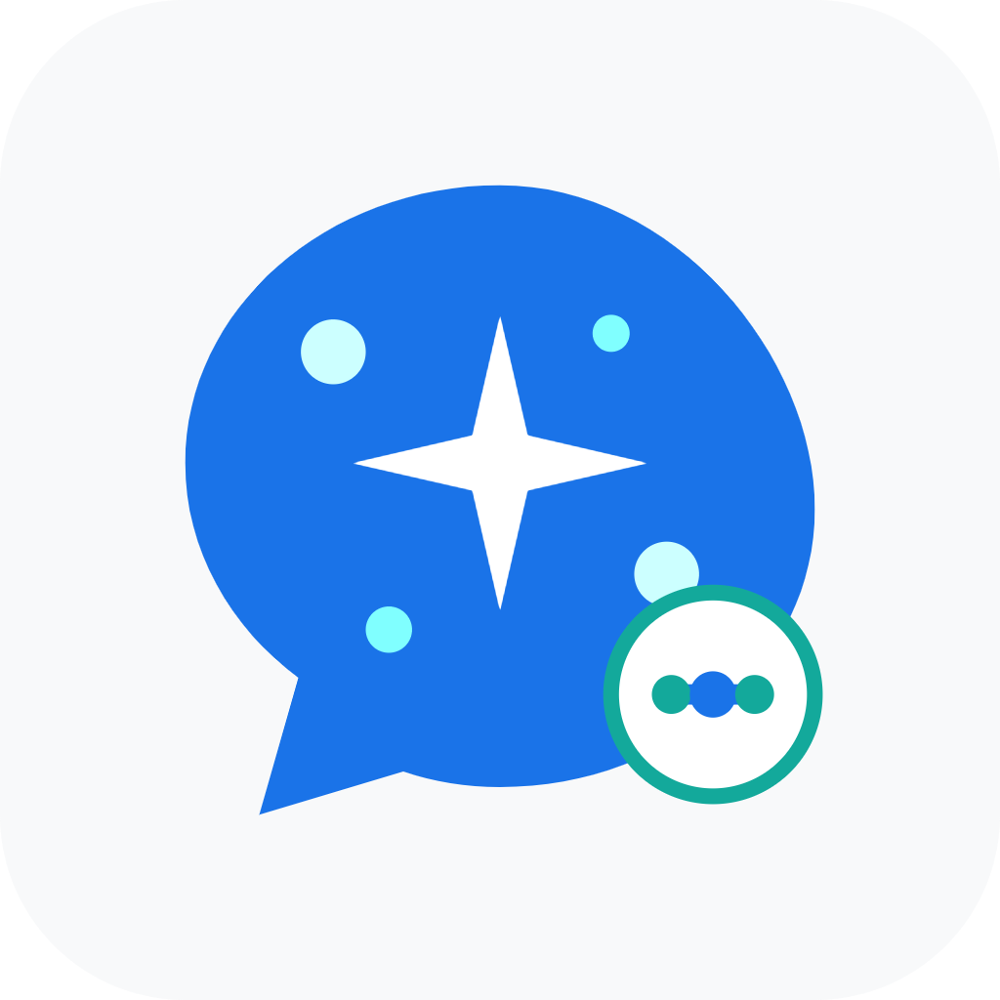

Aether Cockpit
Local Mobile Gateway · 独立本地网关概念
不依赖电脑 · 数据留在手机
手机就是网关主机
本机启动 · 本地渠道 · 本机日志
前台服务运行 · 通知常驻
概览
此手机独立运行 · 无需电脑或云端
网关正在运行本机应用可通过回环地址接入
http://127.0.0.1:7860/v1
只接受此手机上的本地连接。局域网共享默认关闭。
今日请求128成功率 98.4%
已启用账号8 / 102 个需要关注
今日 Token2.4M缓存命中 63%
今日成本$18.42本机估算
入口协议
OpenAI Chat / Responses7860
Anthropic Messages7860
Gemini API7860
本地渠道余量
Qoder CN本机账号 · 5 小时窗口12%2h 14m 重置
WorkBuddy CN本机账号 · 今日额度68%明日重置
此原型使用演示数据。正式版网关、账号凭据与日志留在手机；模型请求会直接发送到你配置的上游服务商，不经过桌面主机或项目云端。
渠道
账号与凭据存储在此手机
Qoder CN主力账号 · 额度 12%关注2h 14m 后重置
WorkBuddy CN2 个账号 · 余量 68%可用最近刷新 12:41
Claude 订阅Pro · 5 小时额度 74%可用最近刷新 12:38
Antigravity本机 OAuth · 7 天额度 91%可用最近刷新 12:31
OpenCode Go本机订阅 · 周额度 53%可用最近刷新 12:24
用量
统计数据保存在此手机
本机估算成本 · USD$18.42比昨天同期 ↓ 8.6%
请求费用今日 · 本机时区
渠道分布
Claude$7.26 · 42 次
Qoder CN$5.91 · 38 次
WorkBuddy CN$3.84 · 29 次
其他渠道$1.41 · 19 次
本机日志
此设备 · 近 7 天 · 316 条
gpt-5.6 · HTTP 429Codex · 额度已用尽 · 已重试 2 次失败12:42 · 1.2s
claude-sonnet-4-6Claude · Anthropic Messages · 流式成功12:40 · 4.8s
deepseek-v4.1-flashQoder CN · OpenAI Chat成功12:35 · 2.1s
gemini-3.8-flashAntigravity · 工具调用成功12:30 · 6.4s
请求正文不默认显示；错误信息可能包含上游返回内容。账本与日志保存在本机。
本机设置
网关与数据均由此设备管理
运行方式
网关运行中Android 使用前台服务保持运行
开机后启动由系统允许后自动恢复本机服务
局域网访问关闭 · 仅 127.0.0.1 可连接
Android：网关运行时显示系统常驻通知。停止服务后，本机客户端将无法连接。
本机数据
加密账号与凭据使用系统安全存储保护密钥已启用
用量账本保存在应用私有目录近 30 天
运行位置不依赖网络配对或桌面主机本机
删除数据会移除本机账号、凭据和用量历史；执行前会要求系统生物识别或设备解锁确认。
Windows 版设置分组
9 个分组更多功能
Windows 版完整功能目录 · 本机独立数据
没有匹配的功能
纯本机模式只管理这台手机的数据。Windows 托盘、WSL 和 Windows 客户端进程不会自动同步；需要管理 PC 时属于另一种远程连接模式。
常规
设备外观与应用行为
高级设置与 Windows 版字段对齐；不支持的系统功能会显示平台说明，不会静默忽略。
接入渠道
选择服务商，再按支持方式授权
OpenAI / Codex浏览器授权 · Token JSON · 手动 Key
ClaudeOAuth 登录 · API Key
DeepSeekAPI Key · 兼容端点
Qoder CN设备登录 · 本机导入
WorkBuddy设备登录 · 本机导入
登录凭据写入手机系统安全存储。此独立网关不会扫描 Windows 或其它设备上的登录态。
唤醒任务
签到队列、周期计划与执行结果
渠道签到按依赖顺序执行 · 2–6 秒间隔
自动刷新额度每 30 分钟 · 仅本机启用账号
队列任务
Qoder CN · 每日签到成功 · 08:02
WorkBuddy · 额度刷新等待 · 2 分钟
OpenCode Go · 每周检查明日 · 09:00
执行规则
失败后重试最多 3 次 · 指数退避开启
应用启动
接入此手机上已安装的兼容客户端
Windows 版可发现和启动桌面客户端、管理隔离实例；独立手机版改为打开手机应用与系统分享，不会控制 PC 进程。
手机客户端
Claude已安装 · 可打开自定义 API 配置
Chatbox未检测到 · 可使用兼容 API 地址
本机入口配置
复制 API 地址与密钥供支持自定义端点的移动客户端使用
会话
仅显示此手机上的 Agent 会话
重构 API 路由Codex CLI · 12 分钟 · 18,420 tokens14:32
分析渠道额度Claude Code · 8 分钟 · 9,310 tokens13:51
完善请求日志OpenCode · 23 分钟 · 21,045 tokens昨天
资源库
指令、技能、MCP、子代理与 Hooks
代码审查规范共享指令 · 适配 Codex / Claude
frontend-design技能 · 已安装于 3 个本机 Agent
GitHub MCP服务器 · 需要凭据
资源写入手机上兼容的 Agent 目录；Windows 资源不会自动同步到此独立设备。
Qoder CN
账号、额度与模型策略
主力账号最后检查 12:41 · 本机加密存储
5 小时额度12%重置倒计时 · 2h 14m
模型与路由
deepseek-v4.1-flash对外模型名 · deepseek-chat已启用
并发上限每账号最大活动请求数4
价格倍率用于本机成本估算1.00×
高级配置
标签与备注生产 · 高优先级
代理与自定义 Headers继承全局设置
网关与探针
一个本机地址 · 多协议兼容
仅本机监听LAN 访问默认关闭 · 127.0.0.1
http://127.0.0.1:7860/v1
接入协议
4 种调用方密钥
mobile-clientRPM 60 · 模型限制 3 · **** 8a3f
本机回环127.0.0.1 请求不需要调用方密钥可信
诊断与探针
健康 / 就绪/healthz · /readyz正常
Prometheus 指标/metrics · 当前进程
版本与 Agent CLI版本信息、已安装状态与命令
2FA 管理
验证码在此设备本地生成
TOTP 种子属于高敏感凭据；使用系统安全存储，隐藏锁屏预览。删除前要求设备解锁确认。
GitHub添加于 10 月 28 日 · 自动复制关闭482 19323 秒后更新
OpenAI添加于 10 月 16 日715 60423 秒后更新
Agent 接入
连接支持自定义 Base URL 的本机客户端
OpenAI-compatibleBase URL · http://127.0.0.1:7860/v1
Anthropic-compatible同一端口 · Messages API
手机端客户端
Claude已发现配置入口已连接
通用 API 客户端使用调用方密钥 · 60 RPM
Windows CLI 的安装检测、版本管理与配置文件写入仅在 Windows 主机上运行；此处只展示手机侧 API 接入。
路由
模型别名、渠道顺序与失败回退
模型映射
gpt-4o-miniQoder CN → WorkBuddy → OpenAI
claude-sonnetClaude 订阅 → Anthropic API
调度策略
失败自动切换429 / 5xx · 最多 2 次
冷却与并发队列按账号额度与 RPM 限制
隐私脱敏
请求发送到上游前处理匹配内容
全局脱敏应用于所有渠道与协议
邮箱地址正则规则 · 替换为 [EMAIL]
API 密钥常见 Key 前缀 · 替换为 [SECRET]
alice@example.com → [EMAIL]
脱敏规则保存在手机，并在请求转发前执行；原始请求正文不默认写入日志。
插件
本机扩展与权限管理
OpenAI 兼容转换内置 · 处理 Chat / Responses启用
用量账本内置 · 保存请求元数据与成本启用
渠道扩展5 个 · 权限：网络与凭据
插件只在手机本地安装。未知来源扩展安装前显示权限清单。
额度快捷查看
按系统能力显示可用渠道额度
Android 常驻通知运行中显示网关状态与低额度提醒
低额度提醒低于 15% 时通知
桌面小组件展示 Qoder、WorkBuddy 与 Claude 余量
Windows 额度悬浮窗由手机系统通知与小组件替代；iOS 小组件刷新频率由系统决定。
请求失败 · HTTP 429
Codex · gpt-5.6 · 12:42
上游额度已用尽。本机网关尝试了 2 个候选账号后仍未成功。
总耗时 · 首字节1.2s · 420ms
请求 Token1,248
原始错误详情留在本机账本；默认折叠，避免敏感上游内容在锁屏或分享预览中泄露。
底部导航进入概览、渠道、用量、请求与更多；“更多”提供 Windows 版全部工作区及设置分组。